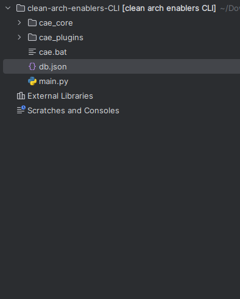

Rápido & fácil
Sobre o CAE
O CAE foi concebido como uma ferramenta valiosa para desenvolvedores, simplificando e acelerando o processo de criação de projetos que adotam a Clean Architecture. Através de comandos simples no terminal, o CAE permite a criação de estruturas de projetos padronizadas de acordo com suas necessidades específicas. Além disso, viabiliza a criação ágil de casos de uso e a atualização de dependências entre as camadas do projeto.
Como instalar e configurar o cae?
Sistema Windows
Baixando o cae
Para fazer download do cae, você pode clicar no botão Download no menu ou então baixar no botão abaixo
espere terminar o download e faça a extração para uma pasta de sua preferência como no exemplo a seguir
Configurando o executador
Entrando na pasta onde você fez a extração da pasta baixada, você deve encontrar arquivo cae.bat como no exemplo a seguir
Abrindo o arquivo para edição, você encontrara o seguinte
mude o "caminho onde o cae foi extraido" para o caminho onde o cae foi extraido na sua maquina e salve o arquivo.
adicionando o cae como variavel de ambiente
Primeiro de tudo pesquise "Editar as variáveis de ambiente do sistema" e deve aparecer algo do tipo
clicando ai você deve ir para uma tela semelhante a essa.
agora clique em "variaveis de ambiente..."
selecione a variavel path e clique no botão "Editar..."
coloque um ";" e o caminho onde o arquivo cae.bat se encontra, como no exemplo a seguir
Feito isso é só clicar em ok em todas as janelas e o cae deve está funcionando na sua maquina
Testando o cae
Primeiro abra o cmd em algum projeto que tenha o arquivo pom.xml e a pasta use_cases.
Depois rode o comando "cae new fuc teste" para testar a criação de um caso de uso. o resultado deve ser semelhante a esse
Se tudo deu certo o resultado deve ser semelhante a esse
Como utilizar o cae?
Todos os sistemas
Entendo os principais comandos do cae
Para se utilizar o cae, tem que ter em mente alguns comando básicos para a correta utilização. os comandos iniciais e pre definidos são simples porém pode se expandir de acordo com a necessidade do usuario.
Para chamar o cae apos aquelas configurações a cima, basta abrir o terminal e digitar
Porém isso não vai ser suficiente, precisamos passar os argumentos para o cae. a sintaxe padrão pode ser observada a seguir
Agora só precisamos saber quais functions o cae aceita e isso deve ser o suficiente para automatizar a criação dos casos de uso.
Funções pre definidas
O cae permite modificação e alteração do comportamento dessas funções, sem necessidade de alteração do código em si. permitindo também a inserção de novas funções. porém agora vamos focar em mostrar como utilizar as pre definidas por ele. e falar um pouco sobre cada uma.
A primeira função que vamos abordar é a FUC(Function use case) no caso ela é do tipo IO (entrada e saida) cria uma série de pasta e arquivos referente a um caso de uso com o nome que você passar logo apos a função.
O nome passado como argumento pode ser passado de diferentes formas, de todas vai ser reconhecido e tratado corretamente pelo cae. para exemplo vamos supor que queremos criar um caso de uso com o nome "adicionar novo usuario"
o cae aceitaria isso como entrada válida, dando o mesmo resultado
"Adicionar novo usuario" obs: para palavras separadas por espaço o "" é obrigatório
AdicionarNovoUsuario
adicionarNovo-usuario
adicionar_novoUsuario
Em resumo o cae aceita PascalCase, CamelCase, Snake-case e qualquer junção dessas combinações.
Para saber quais arquivos e quais pastas ele cria em detalhe, você pode acessar o arquivo db.json onde o cae foi instalado para visualizar o conteudo do template.
De modo semelhante, basicamente tudo tratado falado sobre o FUC, se aplica ao SUC(Suplier use case) e aos demais, com mudanças claro, nos conteudos dos arquivos e nos arquivos em si criados na chamada da função. para mais detalhes, é interessante olhar o arquivo db.json
Por dentro do arquivo db.json
Primeiro, onde fica o arquivo db.json? esse arquivo se encontra onde você salvou o cae mais especificamente proximo ao main.py
Dentro do arquivo db.json, você deve encontrar algo semelhante a foto abaixo
a sintaxe básica é bem simples, uma lista de funções que tem como chave o nome da função e o valor é uma lista de names, dir(pastas), files(arquivos) para adicionar ou alterar é simplementes duplicar ou manipular esse arquivo e salvar, quando rodar novamente essa função já deve estar funcionando desse novo modo
por exemplo, digamos que queremos adicionar a criação de um uma nova pasta na nossa função fuc, basta no final da lista de dir adicionar o nome dessa nova pasta como no exemplo abaixo:
De modo semelhante apagando ou adicionando podemos mudar a quantidade de arquivos e o seu conteudo, sem precisar mexer no código de maneira direta. porém, é aconselhado antes de mexer no db.json fazer bacukp do mesmo para caso tenha alguma mudança que cause estrago.
Melhorias que estão em andamento no cae
O cae atualmente possibilita a criação de casos de uso, nada muito além disso.
Nas proximas atualizações o cae vai possibilitar não só a criação de casos de usos, como também de projetos completos, com mais de uma camada, isso apatir de um comando no terminal além de criação do caso de uso em mais de uma camada de uma vez e também a criação de portas.
O cae é um projeto totalmente autonomo e sem apoio financeiro, qualquer ajuda, seja na revisão ou dicas de melhorias no código é bem vinda e pode ser feita entrando pelo meios de contato listado abaixo